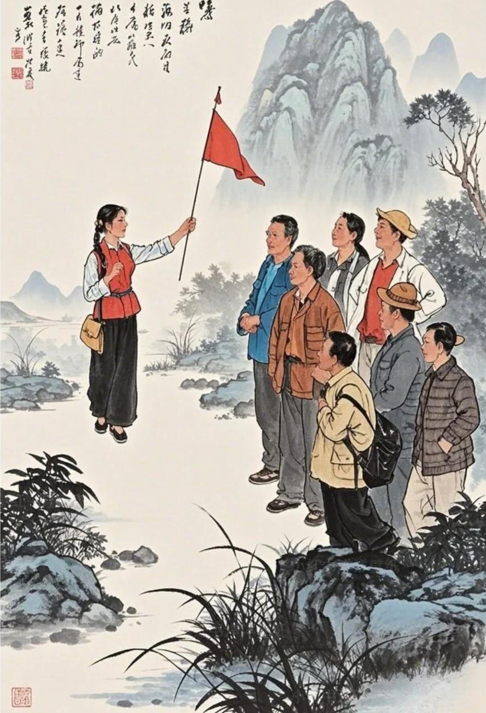
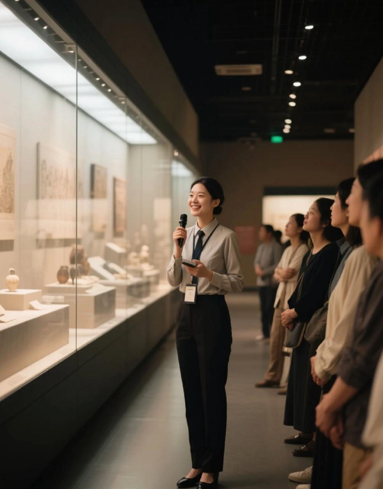
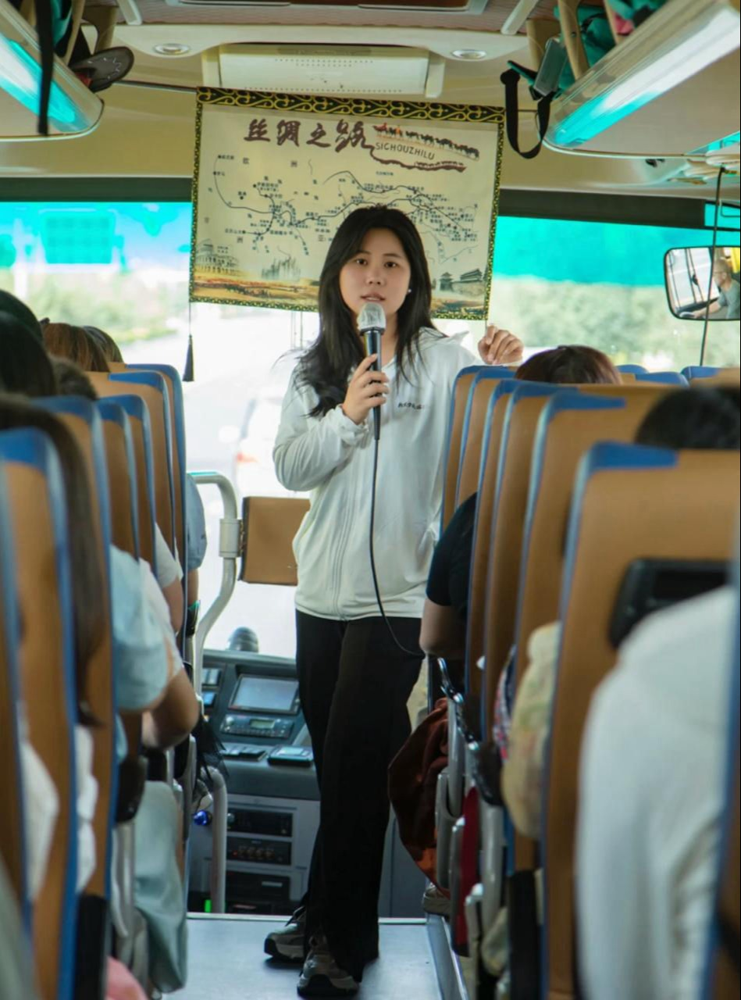
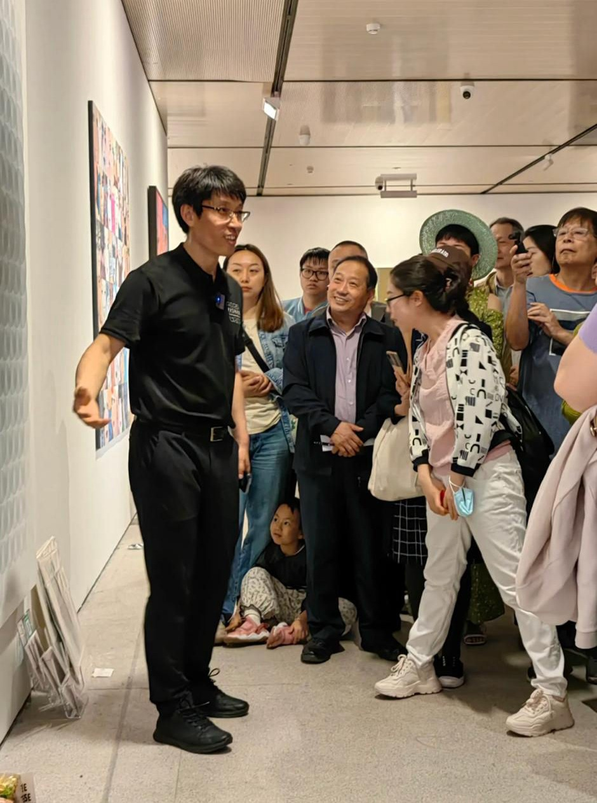
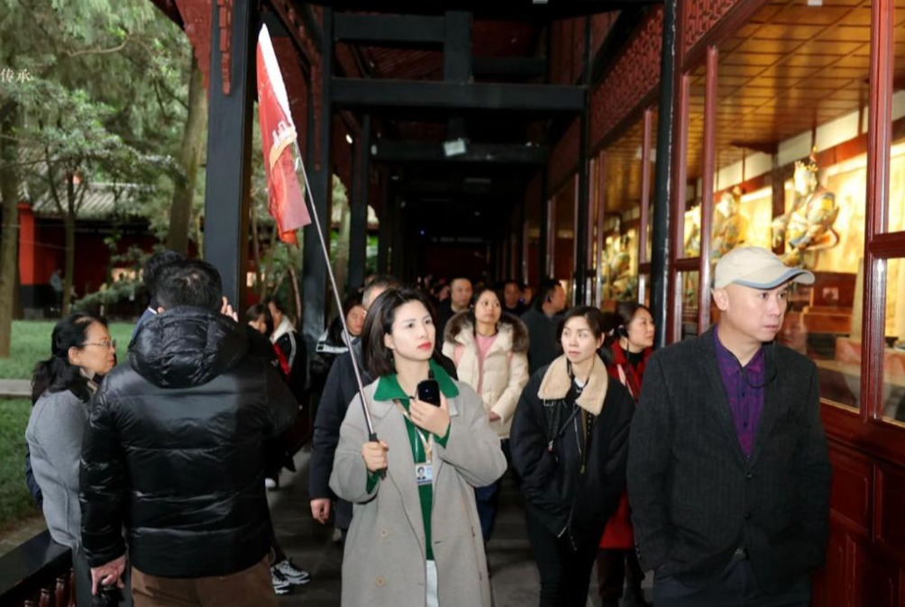

A report exploring the commonalities between designers and tour guides

在古希腊、古罗马、埃及等文明中，贵族或朝圣者旅行时，会雇佣当地人引路讲解，例如神庙、遗迹、集市。
欧洲教徒前往圣地，会由修道士或商人“引导”，提供住宿和安全。
早期导游角色类似于“解说+向导+保镖”的结合。
18世纪英国兴起“Grand Tour”传统，贵族子弟在欧洲旅行学习艺术与文化
* 托马斯·库克（Thomas Cook）**在1841年组织了第一批现代意义上的旅游团，开启商业旅行导览时代。
📌 导游职业开始专业化与商业化。
The Historical Evolution of Tour Guides
In ancient Greek, Roman, Egyptian, and other civilizations, nobles and pilgrims would hire local guides to guide them to places such as temples, ruins, and marketplaces.
European believers traveling to holy sites would be "guided" by monks or merchants, who would provide accommodation and safety.
The early role of tour guides resembled a combination of "interpreter, guide, and bodyguard."
In the 18th century, the "Grand Tour" tradition emerged in Britain, where aristocratic children traveled across Europe to study art and culture.
* Thomas Cook** organized the first modern tour groups in 1841, ushering in the era of commercial travel guides.
📌 The tour guide profession began to professionalize and commercialize.

导游业
始终围绕游客的兴趣、需求和情绪调整讲解内容与路线节奏。
Always tailor the content and pacing of the tour to the interests, needs, and emotions of the visitors.
通过游客反馈、评分和观察，不断优化路线和讲解策略。
Continuously optimize itineraries and explanation strategies based on visitor feedback, ratings, and observations.
需遵守景区规定、文化敏感性，避免虚假宣传。
Must adhere to scenic area regulations and cultural sensitivities, and avoid false advertising.
设计师
通过用户调研与测试，理解用户痛点，打造符合期望的产品体验。
Through user research and testing, understand user pain points and create a product experience that meets their expectations.
运用用户行为数据（如点击热图、转化率等）进行 A/B 测试和版本迭代。
Use user behavior data (such as click heatmaps and conversion rates) to conduct A/B testing and iteration.
在设计时需遵循可访问性、数据隐私等相关法规与道德标准。
Must adhere to relevant regulations and ethical standards, such as accessibility and data privacy, when designing.
问题：
某日本旅行平台 TripKuru 导游反馈：用户在日落时段流失率高，影响好评率
Tour guides on the Japanese travel platform TripKuru reported high user drop-off rates during sunset, impacting positive reviews.
方案：
平台设计团队与导游合作，在旅途中嵌入“文化小故事”模块 + 晚间打卡任务，提升参与度。
The platform's design team collaborated with tour guides to embed "cultural short stories" and evening check-in activities throughout the tours to increase engagement.
结果：
* 用户平均旅途停留时间增加 15%
* 满意度评分从 4.1 提升至 4.6（5 分制）
* 回访率提升 18%
Average user duration increased by 15%
Satisfaction ratings increased from 4.1 to 4.6 (out of 5)
Return visit rate increased by 18%

问题：
2021 年巴黎导游行业面临游客反馈：行动不便者对现有城市导览路线感到不友好。
In 2021, the Paris tour guide industry faced feedback from tourists: existing city tours were unfriendly to people with disabilities.
方案：
设计师与城市导游、残障人士组织合作，重新设计导览路径，加入坡道标识、语音识别提示。
Designers collaborated with city guides and disability organizations to redesign the tour routes, incorporating ramp signage and voice recognition prompts.
结果：
* 使用率提升 40%
* 好评关键词中“accessible”（可达性）出现率上升 3 倍
Usage increased by 40%
The use of the word "accessible" in positive reviews increased by 3 times

问题：
某博物馆语音导览 App 留存率低，用户抱怨信息杂乱、讲解无趣。
A museum's audio guide app had low retention rates, with users complaining about disorganized information and boring explanations.
方案：
* 导游提供典型讲解节奏数据
* UX 设计师重构交互流程，加入“兴趣点速览”+“深度解说”模式切换
The tour guide provided data on typical tour cadences.
The UX designer restructured the interaction flow, adding a "Quick Overview" and "In-Depth Explanation" mode.
结果：
* App 日活提升 22%
* 用户平均使用时长增加 1.7 倍
* NPS（净推荐值）从 34 提升至 58
Daily active users increased by 22%
Average user time spent increased by 1.7 times
Net Promoter Score (NPS) increased from 34 to 58

导游业 x 设计师 —— 不同行业的相似演化
尽管设计师与导游处于不同领域，一个面对“用户”，一个面对“游客”，但它们的职业演变轨迹和核心价值具有惊人的相似性
围绕用户需求、通过数据优化、在规则与伦理下创造价值体验。
他们都在不断迭代中寻找更好的“人—服务”连接方式。